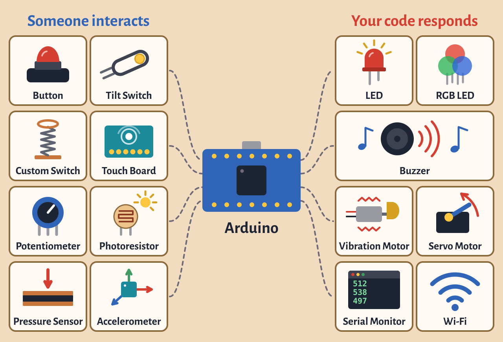

Final Project

Make something interactive with the Arduino that shows what
you’ve learned in this class.
Requirements
Your project must:
- Use the Arduino. Breadboard should not be
visible.
- Let someone interact with it, using a
sensor, button, keyboard, mouse or something else.
- Respond through code. When someone
interacts with it, your code makes something happen: light,
sound, motion or something on a computer.
Every week: Take photos of your progress and
add them to your “Final Project” channel on Are.na.
Timeline
- Week 11 (Nov 2–4): Think and research.
Create an Are.na channel called “Final Project”. Put all your
research and ideas there. Sketches, Inspiration, etc.
- Week 12 (Nov 9–11): Share your proposal.
Your proposal is due Monday, November 9. Post it in the “Final Project Proposals” thread on Canvas.
We’ll look at everyone’s ideas in class that day and give
feedback. I will also go around with everyone individually to
brainstorm and talk about how to carry out your project with
what is available either in the lab or can be ordered
online.
- Week 13 (Nov 16–18): Start testing your
idea. Build a rough physical version that shows your
idea can work. Upload photos to Are.na by the end of the
week.
- Week 14 (Nov 23): Build. Start building the
final version. Upload your progress to Are.na.
- Week 15 (Nov 30): Finish. Monday is a
studio day for final touches and fixing problems. Upload your
progress to Are.na.
- Wednesday, December 2: Final critique.
Present your project, and take photos and videos of it that
day.
What to Submit
Submit to the Final Project assignment on Canvas by the
end of the day on December 2:
- Your Arduino sketch. The code should be more than just one
of the built-in examples, with comments throughout explaining
what it does.
- Your photos and videos from critique day. At least one photo
of the object itself, and one video of it being interacted with.
Must use the white backdrop documentation station that is
located in the back of the class lab.